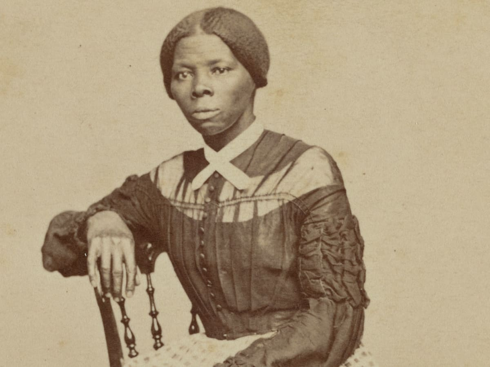
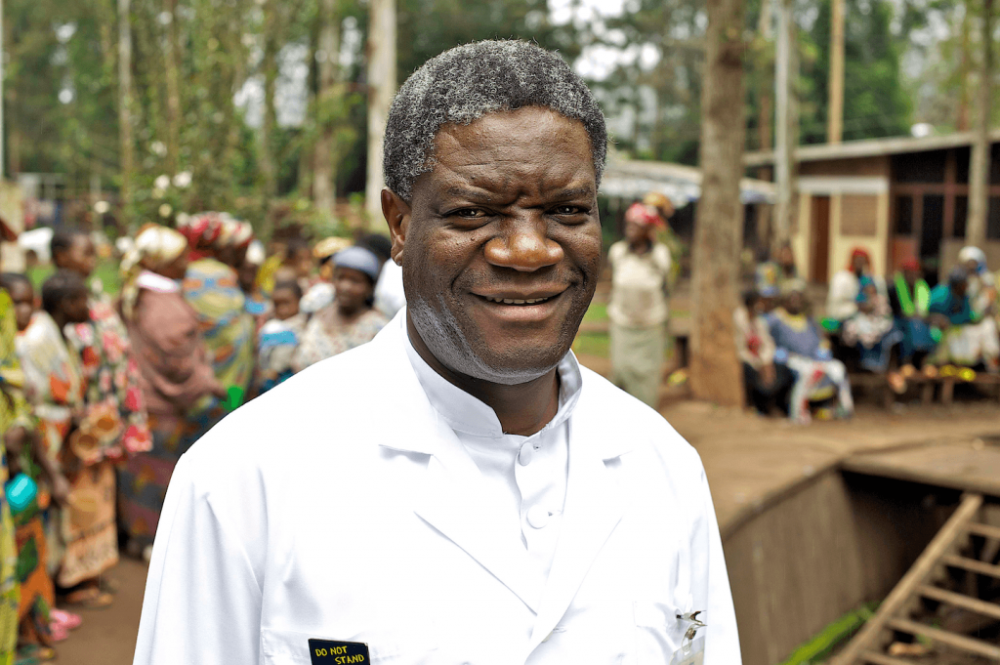

Victor Seong-Ja
Sporty bookworm, Curious friend.

| Recommended Music | Why I Chose This | Embedded Song |
|---|---|---|
| Amore by Fally Ipupa | Fally Ipupa is a musician from my hometown. His music uses chord progressions and drums that have a deep roots in the history of African music. | Follow link |
| Anybody by Burna Boy | This is a beautiful jazzy song that utilizes drums with roots in west Africa. Burna Boy is one of Africa's biggest artists. | Follow link |
| Photograph by Ed Sheeran | In my humble opinion, Ed Sheeran is a genius songwriter. Listening to this song always takes takes me back to my childhood. | Follow link |
| Role Models | Why I Respect Them | Embedded Image |
| Elon Musk | Elon Musk is undoubtably one of the greatest minds in history. He revolutionized several different industries and continues to lead the way in terms of innovation. |  Follow link |
| Harriet Tubman | Harriet Tubman is a political activist from USA who was born in the 1800s. She was born into slavery but overcame it. She later dedicated her life to rescuing other enslaved people. |  Follow link |
| Dennis Mukwege | Dr. Dennis Mukwege is a Nobel Peace Prize winning doctor from eastern DRCongo. He had dedicated his life to helping women and children in Eastern DRCongo who have had to live through the horros of war. |  Follow link |
| Favourite Athletes | Why I Like Them | Embedded Video |
| Didier Drogba | Drogba used to play for my favourite team, so it's natural that I like him. But outside of football, Drogba is a philanthropist who played an instrumental role in stopping a civil war from happening in his home country of Ivory Coast. |
Follow link |
| Cristiano Ronaldo | Although I may not be the biggest Ronaldo fan, he definitely had a lot that I respect about him. He came from poverty and worked very hard to succeed. He is also a very generous philanthropist. | Follow link |
| Ngolo Kante | Another player from my favourite team is Ngolo Kante. He is known to be one of the most humble and shy players. I have so much respect for people who stay true to themselves and don't let their success consume them. | Follow link |
Hi Professor! My name is Victor and I am a Computer Science student. I enjoy reading books, watching
films, and listening to music.
Oh, I am also a big sports fan. I hope we can meet in person some day soon.
With Regards,
Victor.